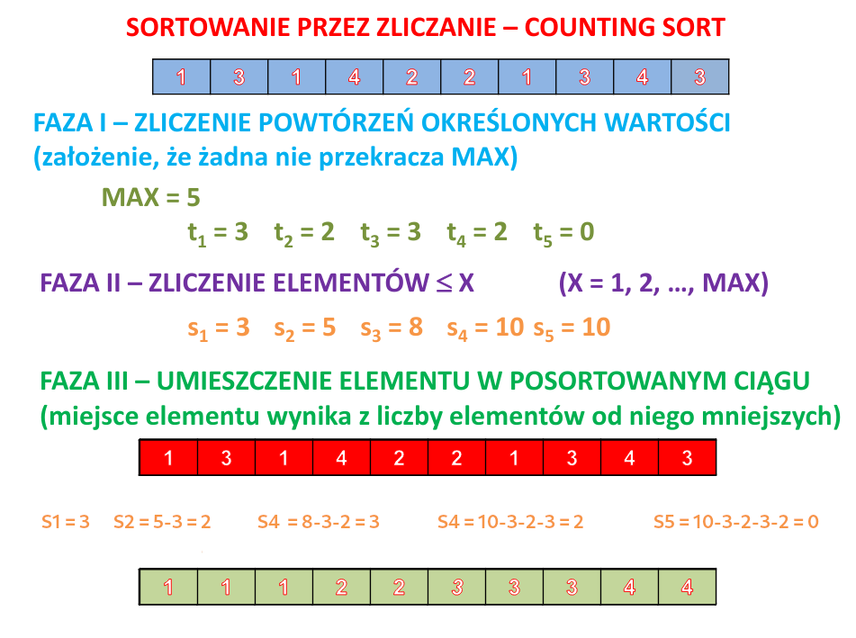

Krótki opis:
Metoda sortowania danych, która polega na sprawdzeniu ile wystąpień kluczy mniejszych od danego występuje w sortowanej tablicy.
Algorytm zakłada, że klucze elementów należą do skończonego zbioru (np. są to liczby całkowite z przedziału 0..100), co ogranicza możliwości jego zastosowania.
Główną zaletą tej metody jest liniowa złożoność obliczeniowa algorytmu – O(n+k) (n – oznacza liczebność zbioru,
k – rozpiętość danych, czyli w przypadku liczb całkowitych: powiększoną o 1 różnicę między maksymalną a minimalną wartością.
Największymi ograniczeniami algorytmu są konieczność uprzedniej znajomości zakresu danych i złożoność pamięciowa (wymaga dodatkowo O(k) lub O(n+k) pamięci).
Szczególny opis:
Na początku działania algorytmu ustalany jest przedział wartości, które zależą od wartości wszystkich elementów w sekwencji, która ma być posortowana.
Dla przykładu, sekwencja v liczb całkowitych [100, 2, 0, 150, 2, 3, 0] tworzy przedział [min(v), max(v)] = [0, 150] wynoszący łącznie 151 elementów;
z kolei v' o wartościach [15, 6, 11, 10] tworzy przedział [6, 15] z dziesięcioma elementami.
W momencie, gdy przedział nie jest znany, można posłużyć się minimalnymi i maksymalnymi wartościami typów elementów w v.
Dla każdego elementu z utworzonego przedziału obliczana jest ilość jego wystąpień w wejściowej sekwencji v, tzn. tworzony jest histogram dla elementów sekwencji wejściowej.
Na podstawie utworzonego histogramu generowana jest sekwencja wyjściowa, czyli posortowane elementy.
Generowanie polega na iteracji po kolejnym elemencie w histogramie (który również jest sekwencją)
oraz konkatenacji do sekwencji wynikowej tymczasowej, sekwencji tylu elementów o danej wartości, ile wskazuje histogram dla danego elementu.
Początkowa sekwencja wynikowa jest pusta.
